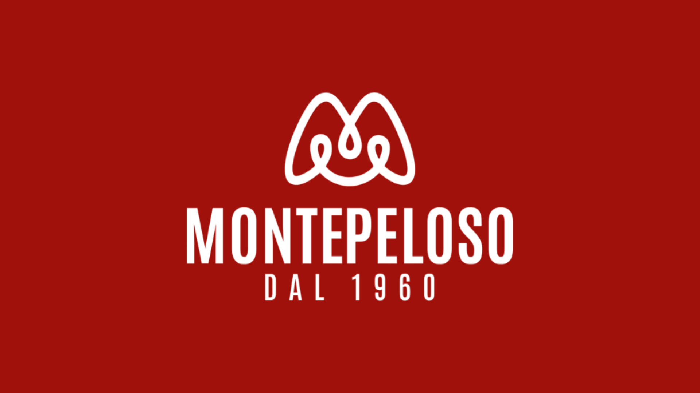
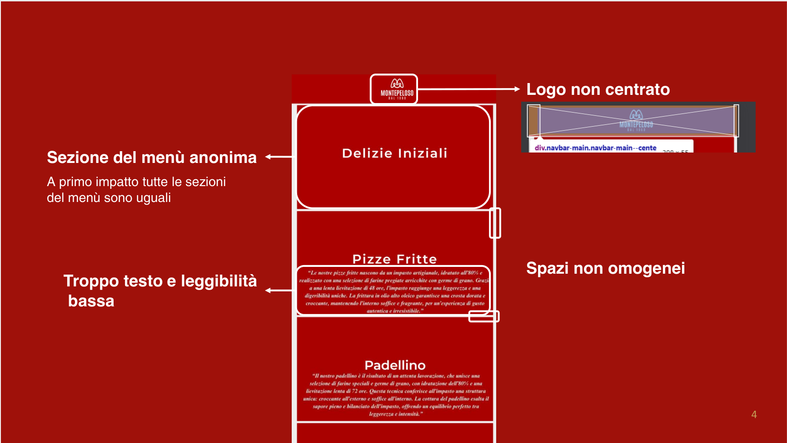
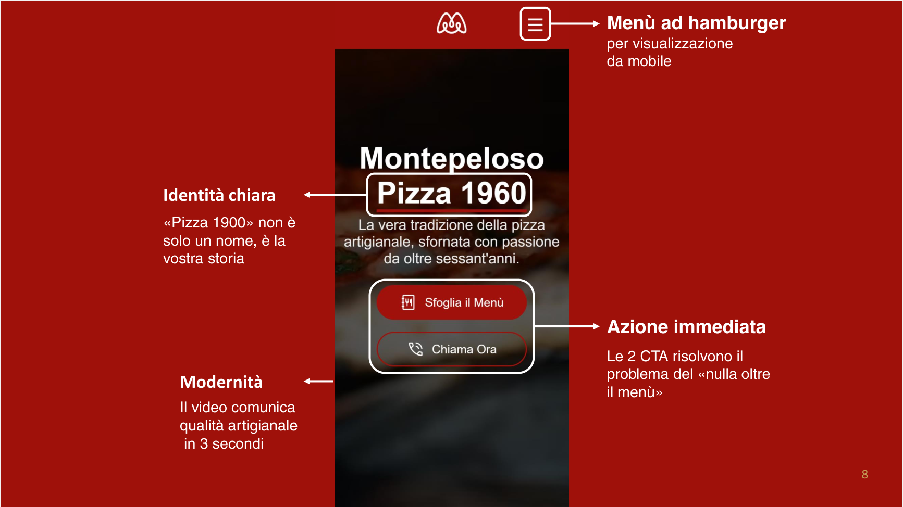
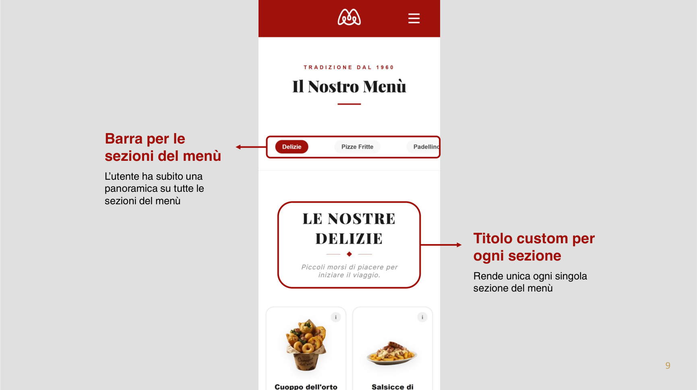
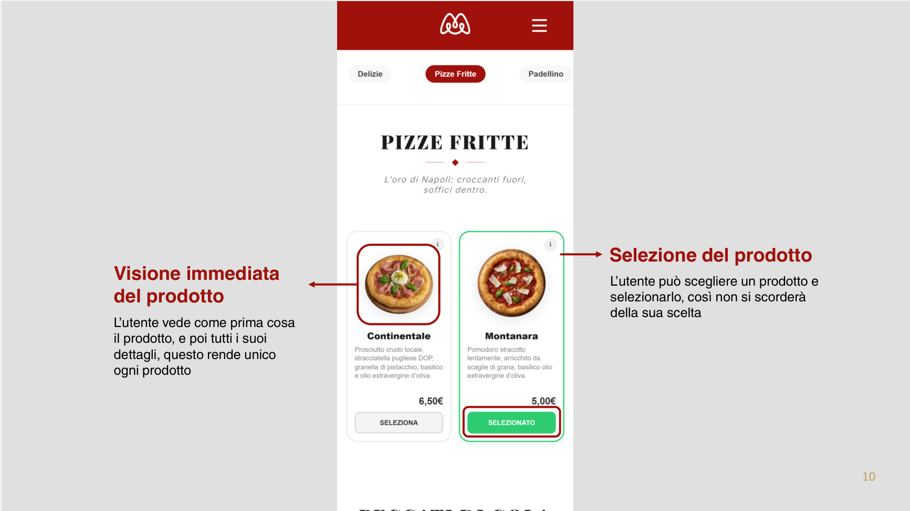
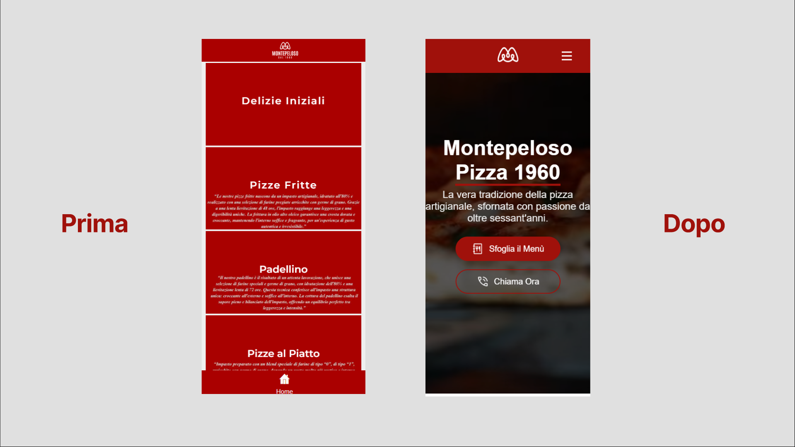
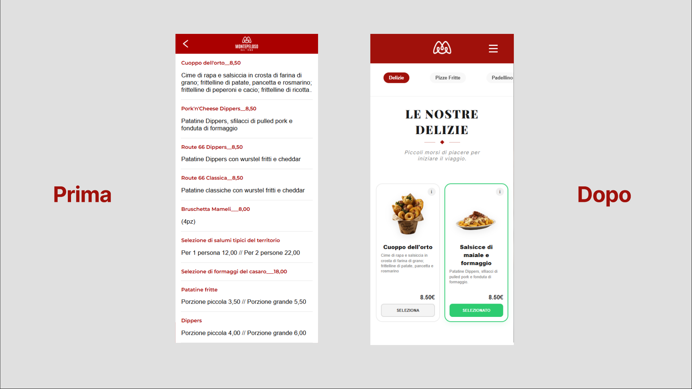

Montepeloso
Restyling sito web

Il cliente
Montepeloso è una pizzeria di Lucera attiva dal 1960. Locale curato, social attivi, format unici, prodotto di alta qualità. Un'eccellenza locale con una presenza digitale che non la rappresentava.
Chi la scopriva su Instagram vedeva un'attività moderna, curata, viva. Chi atterrava sul sito trovava qualcosa di completamente diverso. Quel divario crea sfiducia — e la sfiducia fa perdere clienti.
Il problema
Il vecchio sito era solo un menù digitale. Niente hero, niente storytelling, niente che dicesse all'utente chi è Montepeloso e perché sceglierla. A primo impatto non era chiaro neanche cosa facesse il locale.
Sul piano visivo i problemi erano concreti: il logo non centrato nella navbar, spaziature incoerenti, testo in eccesso con leggibilità bassa. La sezione menù era completamente anonima — tutte le categorie identiche tra loro, nessun elemento distintivo, e i prezzi senza una posizione fissa che variava in base alla lunghezza del nome del prodotto.

L'obiettivo
Trasformare il sito da semplice menù digitale a strumento di comunicazione reale. Un sito che raccontasse la storia del locale, trasmettesse qualità artigianale al primo sguardo e guidasse l'utente verso un'azione — sfogliare il menù o chiamare.
La soluzione
Il nuovo design parte dalla hero: un video in background che comunica artigianalità in tre secondi, senza bisogno di leggere nulla. Il titolo Pizza 1960 non è solo un nome — è la storia del locale sintetizzata in due parole. Due CTA ben distinte, Sfoglia il Menù e Chiama Ora, risolvono il problema del "nulla oltre il menù" e coprono due tipi di utente diversi nella stessa schermata.

Il menù
La sezione menù è stata riprogettata da zero. Una barra di navigazione orizzontale permette all'utente di avere subito una panoramica di tutte le categorie disponibili. Ogni sezione ha un titolo custom con una sua personalità — non più blocchi anonimi tutti uguali.
I prodotti vengono mostrati con l'immagine in primo piano, nome, descrizione e prezzo in posizione fissa. L'utente può selezionare un prodotto per non dimenticarsi della sua scelta — un dettaglio piccolo, ma che cambia l'esperienza di chi sfoglia prima di ordinare.


Lo storytelling
Oltre al menù, il nuovo sito include una sezione dedicata alla storia del locale. Sessant'anni di tradizione meritano una "casa" stabile, non un post che sparisce dopo 24 ore. La narrazione visiva serve a trasmettere fiducia e a giustificare la qualità — e il prezzo — di un prodotto artigianale.
Before vs After


Nota
Questo progetto è rimasto una proposta. Il cliente non ha mai risposto
dopo la presentazione, e il sito non è stato realizzato.
Lo includo nel portfolio perché il lavoro di analisi e design è reale —
ed è quello che conta.
Link per visualizzare il progetto completo: Clicca qui